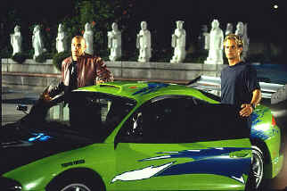
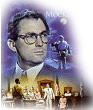
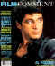

| Fast and the Furious (SE)/ C,A- |
| Universal/2001/107/ANA 2.35 |
Gentlemen, rev up your engines, get ready for an
all out non-stop testosterone assault. There's not much between the
tires in The Fast and the Furious, but it certainly lives up to
its name.
Somewhere in the studied and empty plotting of The
Fast and the Furious there's a traditional teen movie at work
(paging Rebel Without a Cause!), a cop thriller appended (Donnie
Brasco where art thou!), and a typically tepid outsider romance.
Don't look for any subtle or clever touches.
 |
| Brian, Dom and the Green Machine. ©Universal |
New kid on the block Brian O'Connor keeps showing
up at the luncheonette where Mia Toretto works. It's the local hangout
street dragsters. Beefed up stock cars pull up to the curb like bulls
banging wooden Corrida barriers. Brian flirts his way into a fight
broken up by Mia's brother Dominic Toretto. Later, after a night street
drag contest, Brian bonds with Dom. He's part of the gang. But
complications arise, cars explode, gang conflicts are met, and there's
time for one last full tilt drag joust.
I can't say as I cared for Paul Walker very much as
Brian. Maybe it's because I never believed him. Vin Diesel is tough
enough as Dom. Jordana Brewster does the closest thing to acting as
Dom's sister Mia. Michelle Rodriguez, so terrific in Girlfight
gets to throw one punch and act tough, but she's pretty much
wasted.
Director Rob Cohen had a couple of excellent early
successes with Dragon
and Daylight. Unfortunately, he's not meeting the promise of
those earlier efforts. While the action and stunt work in The Fast
and the Furious are just fine, it amounts to nothing more than
the parts in those suped-up engines. If you want to watch
twenty-somethings in tight scanty clothing posturing around hot cars, The
Fast and the Furious might be your ride.
From the first moment Brian's day-glo
green muscle machine fills the screen to Dom's final ride into the
sunset, bright, bold, color is a signature of The Fast and the
Furious. Color saturation is virtually perfect. Contrast levels are
beautifully controlled. No blown out daylight sequences or edgy night
ringing. Blacks are deep and reflectively lustrous. Resolution is dead
nuts on on most scenes. Road tight is tightly contained. Choose between
Dolby Digital and DTS decoding. The DTS is loud, loud, and louder. Make
sure to drop levels at least 5dB. Both tracks are active and
throaty.
For those wanting to get under the hood
of The Fast and the Furious, the special edition provides an
enormous amount of detail. Audio commentary from director Rob Cohen is
articulate and knowledgeable. There are several shorts examining special
effects, deleted scenes with optional director commentary, a stunt
sequence dissected from every angle possible, and a making of
documentary. A short feature on editing a scene to avoid an MPAA R
rating is especially revealing.
To Kill a Mockingbird (SE)/ A,A

From the great novel by Harper Lee, this tale of growing up in the 1930s South is splendidly evocative of place and period. Gregory Peck is splendid. Direction impeccable.

The Movie Poster Archive includes extensive poster images from the films of stars like Susan Hayward, Kirk Douglas, Katharine Hepburn and many more. Our featured star is Kirk Douglas.

Selections from the Feature Archive include articles on
Akira Kurosawa, Blonde Bimbos,
Frank
Darabont, Steven Culp,
John
Herzfeld or Vietnam: The
Hollywood Pariah, and many more....
Director Walks the Wire
Balanced by an armor of movie lore and filmmaking daring, director John Herzfeld is comfortable
walking the high wire. Check out this interview by Stu Kobak.


ISF Monitor Calibrations in the
Tristate New York area. Lots of hardware info and frequent hardware peaks from video expert Kevin
Miller. They may be judgmental, but that's the point, isn't it. Lots of DVD reviews plus news and
more.

Mystery writer Fred Hunter digs into classic films on DVD. Check out
his insightful reviews at The Classics on DVD.


Comprehensive DVD review database. Easy to use
interface with specific region searches.
MRQE
Find reams of movie and DVD reviews at
the Movie Review Query Engine, a index of reviews appearing on the Internet.